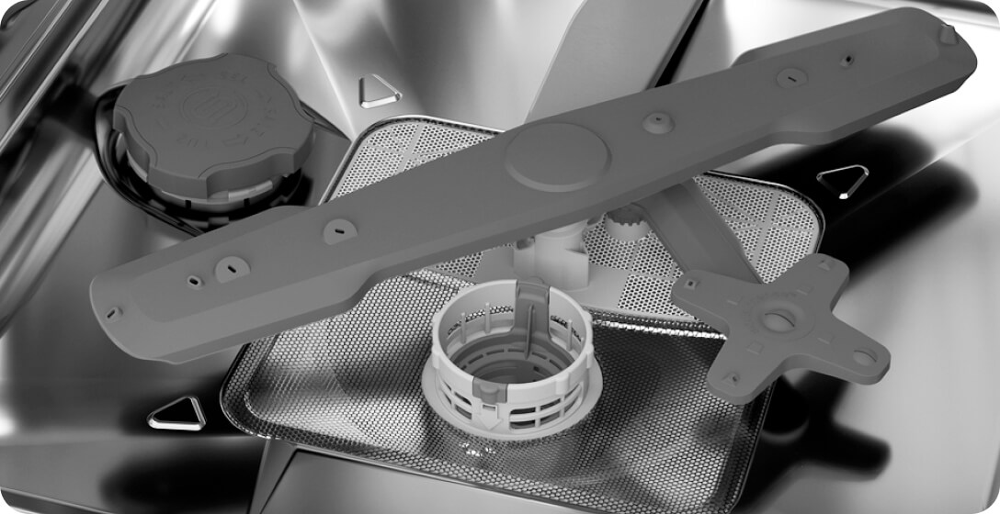

Специальная зона
для самой грязной посуды
Отдельная зона в правом нижнем углу камеры обеспечивает до 5 раз более эффективное мытье даже самой сильнозагрязненной посуды благодаря дополнительному подвижному разбрызгивателю
и повышенному напору воды.

Занимайтесь чем-то интересным и важным, а посудой займется
посудомоечная машина Hotpoint.